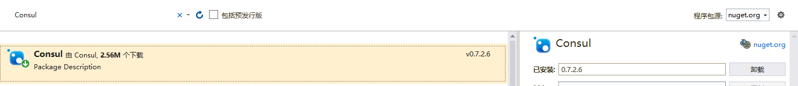

原文连接:https://www.cnblogs.com/kiba/p/11941731.html
前言
我个人觉得，中间件的部署与使用是非常难记忆的；也就是说，如果两次使用中间件的时间间隔比较长，那基本上等于要重新学习使用。
所以，我觉得学习中间件的文章，越详细越好；因为，这对作者而言也是一份珍贵的备忘资料。
Consul简介
Consul一个什么，我想大家通过搜索引擎一定可以搜索到；所以，我就不在重复他的官方描述了。
这里，我为大家提供一个更加好理解的描述。
Consul是什么？
Consul本质上是一个Socket通信中间件。
它主要实现了两个功能，服务注册与发现与自身的负载均衡的集群。
我们可以把他理解为一个没有界面的应用程序，因为没有界面，所以想启动Consul就只能使用命令行了；也因为没有界面，一旦使用命令行启动了Consul，那么，执行该命令行的cmd.exe程序，就成了Consul的宿主了；一旦关闭Cmd窗口，Consul就停止运行了。
服务注册与发现的本质是什么？
其实服务注册与发现的原理很简单。
当我们在本机运行Consul时，他会自动监听8500端口；然后我们通过一个开源类库（这个开源类库可以在nuget上检索到，文章下面会介绍），调用其下不同的方法来向这个Consul进程发送TCP消息，来注册服务或者发现服务。
Consul进程在接收到注册消息时，就把注册的服务信息存储到本地磁盘或内存（因为我没有具体去调查Consul存储数据是否使用了数据库，但我们都知道数据库的数据也是保存在本地磁盘的，所以，它肯定是把数据存进磁盘或者内存中了）。
数据中心
Consul存储数据的地方，官方为其命名为数据中心，也就是上面说的保存我们注册的服务信息的本地磁盘或者内存。
Consul提供负载均衡的集群
Consul的集群也很好理解，在我们成功启动Consul以后，它除了监听8500端口以外，它还监听了一个8031端口。
这个8031端口就是用于Consul集群相互通信的。
我们都知道集群是要两台以上的电脑的，所以，我们就必须找到两台或以上的电脑安装Consul中间件。
然后，使用Consul的命令行，将两台电脑连接到一起，这样集群就形成了。
在集群内每台电脑上安装的Consul中间件，我们统称为服务器代理（Agent）；当集群启动后，会在多个代理服务器之间选举出一个Leader。
选举Leader自然就是服务器代理之间的通信了，也就是通过上面提到的8031端口通信的。
选举了Leader，服务器代理就可以将自身的负载信息发送给Leader了，这样客户端调用Consul检索服务数据时，就可以去性能最优的那台机器上获取信息了。（注：这个就是举例说明，并非Consul的负载均衡的真实处理模式）
Consul代理服务器安装
首先，去官网下载Consul，官网下载地址https://www.consul.io/downloads.html
拉到网站的最下方，选择Window64-bit的Consul下载，如下图：
下载完成后，我们得到一个压缩包consul_1.6.2_windows_amd64.zip；解压缩后，得到consul.exe文件，如下图：

因为我们要使用命令行来运行consul，所以，我们将consul.exe所在的目录添加进环境变量，这样，当我们在CMD窗口中执行consul的相关命令时，系统就会自动将这个些命令发送给consul.exe文件执行了。
配置环境变量如下图所示：
配置完环境变量，我们打开一个cmd的命令行窗口，然后输入consul来确认我们的环境变量是否配置成功，如下图：
看到图中的信息，就代表我们的consul的环境变量配置成功了，已经可以运行了。
接下来，我们在这个cmd窗体中输入consul的命令来启动consul服务器代理，命令如下：
consul agent -server -ui -bootstrap-expect=1 -data-dir=/tmp/consul -node=consul-1 -client=0.0.0.0 -bind=192.168.1.111 -datacenter=dc1
命令解释如下：
其实consul命令大家是可以在网络上搜到它们的定义的，不过我觉得解释的还是太官方，所以，我在这里提供了一份我认为更好的解释。
consul agent：命令头，必须要有。
-server：表面我们现在要启动服务器代理（agent）是服务模式的。Consul Agent的运行模式有两种，Server模式和Client模式。其区别简单来说就是Server模式的Agent可以被选举为Leader，而Client模式的不可以，当然还有其他区别，有兴趣大家可以自行了解。
-ui：consul运行后，会提供一个http://127.0.0.1:8500/ui/的网站，里面存储了Consul Agent各个节点以及注册的服务等相关信息，即数据中心的网页形式体现。这个参数代表是否创建这个网站，这个参数与这个数据中心网站有关。
bind：本机的ip地址，集群内其他代理服务器可以通过这个ip来访问这台电脑的consul代理服务器。
bootstrap-expect：是集群启动条件，指当服务器端模式（Server模式）的代理达到这个数目后，才开始运行。
data-dir：是存放数据中心数据的，该目录必须是稳定的，系统重启后也继续存在的。
datacenter：当前agent的中心数据的名称，默认是dc1。
node：节点在集群中的名称，在一个集群中必须是唯一的，默认是该节点的主机名（代表一个机器）。
client：本地ip地址，这里使用 0.0.0.0 ，就表示这个服务器所有IP都可以，即当这台电脑有俩ip，192.168.1.111和192.168.1.112，那么通过这俩IP都可以访问到这台机器的consul代理服务器。
----------------------------------------------------------------------------------------------------
运行该命令，如下图所示：
可以看到，我们的Consul代理服务已经成功运行了。
现在，我们在去另一台电脑，打开cmd窗口，运行如下consul命令：
consul agent -server -ui -bootstrap-expect=1 -data-dir=d:\consul -node=consul-2 -client=0.0.0.0 -bind=192.168.80.112 -datacenter=dc1 -join 192.168.80.111可以看到，我们在命令行最后面追加了一个join 192.168.80.111；通过这个命令，我们把这台电脑的代理服务器成功的加入到了上文中的consul集群。
服务注册与发现
Consul的服务注册
首先，我们创建一个WebAPI，这里为使用了Core框架创建了一个Web API，为了方便测试，我就直接拿本地的VisualStudio启动测试了。
创建WebAPI后，我们在Nuget中查找Consul的Net版本类库。
在Nuget中搜索Consul，然后选中下图中的选项进行安装。

然后，我们在Startup文件中，增加一个函数，如下：
public static void RegisterConsul()
{
var consulClient = new ConsulClient(p => { p.Address = new Uri($"http://127.0.0.1:8500"); });//请求注册的 Consul 地址
//这里的这个ip 就是本机的ip，这个端口8500 这个是默认注册服务端口
var httpCheck = new AgentServiceCheck()
{
DeregisterCriticalServiceAfter = TimeSpan.FromSeconds(5),//服务启动多久后注册
Interval = TimeSpan.FromSeconds(10),//间隔固定的时间访问一次，https://localhost:44308/api/Health
HTTP = $"https://localhost:44308/api/Health",//健康检查地址 44308是visualstudio启动的端口
Timeout = TimeSpan.FromSeconds(5)
};
var registration = new AgentServiceRegistration()
{
Checks = new[] { httpCheck },
ID = Guid.NewGuid().ToString(),
Name = "test1",
Address = "https://localhost/",
Port = 44308,
};
consulClient.Agent.ServiceRegister(registration).Wait();//注册服务
//consulClient.Agent.ServiceDeregister(registration.ID).Wait();//registration.ID是guid
//当服务停止时需要取消服务注册，不然，下次启动服务时，会再注册一个服务。
//但是，如果该服务长期不启动，那consul会自动删除这个服务，大约2，3分钟就会删了
}然后在Configure中调用这个方法，这样，当我们调试或运行这个项目时，就会自动将这个Webapi注册到Consul里了。
public void Configure(IApplicationBuilder app, IWebHostEnvironment env)
{
if (env.IsDevelopment())
{
app.UseDeveloperExceptionPage();
}
app.UseHttpsRedirection();
app.UseRouting();
app.UseAuthorization();
app.UseEndpoints(endpoints =>
{
endpoints.MapControllers();
});
RegisterConsul();//注册本服务到consul集群
}服务注册完后，可以访问本地数据中心的网站【http://127.0.0.1:8500/ui/dc1/services】来查看注册服务的状态。
Consul服务发现
服务注册完成后，我们再创建一个控制台项目来进行服务发现。
创建完成项目后，也需要引用consul类库，同服务端一样在Nuget中搜索。
编写代码如下：
static void Main(string[] args)
{
var consulClient = new ConsulClient(x => x.Address = new Uri($"http://192.168.1.178:8500"));//请求注册的 Consul 地址
var ret = consulClient.Agent.Services();
var allServer = ret.GetAwaiter().GetResult();
//这个是个dictionary的返回值，他的key是string类型，就是8500/ui上services的instance的id
var allServerDic = allServer.Response;
var test1 = allServerDic.First();
string name = test1.Value.Service;//服务名,就是注册的那个test1
string serverAddress = test1.Value.Address;
int serverPort = test1.Value.Port;
Console.WriteLine($"serverAddress:{serverAddress}==serverPort{serverPort}");
//我们可以在客户端启动的时候，调用一下consul来查找服务
//比如，我们可以在服务集合里查找 服务名叫test1的服务 然后在调用它
//这样，当服务器改变了test1的ip和端口，我们依然可以在集群里找他test1新的ip和端口了
Console.ReadKey();
}运行结果如下：
可以看到，我们已经成功调用了Consul，也成功的获取到了服务信息。
----------------------------------------------------------------------------------------------------
其实Consul除了服务注册与查询，还可以进行Key-Value存储，也就是说，这个是一个分布式Key-Value存储集群。
Key-Value存储的用法在Github已经有例子了，网址：https://github.com/PlayFab/consuldotnet。
----------------------------------------------------------------------------------------------------
C#使用Consul进行服务注册与发现就讲完了。
代码已经传到Github上了，欢迎大家下载。
Github地址：https://github.com/kiba518/KibaConsul
----------------------------------------------------------------------------------------------------
注：此文章为原创，任何形式的转载都请联系作者获得授权并注明出处！
若您觉得这篇文章还不错，请点击下方的【推荐】，非常感谢！
https://www.cnblogs.com/kiba/p/11703073.html